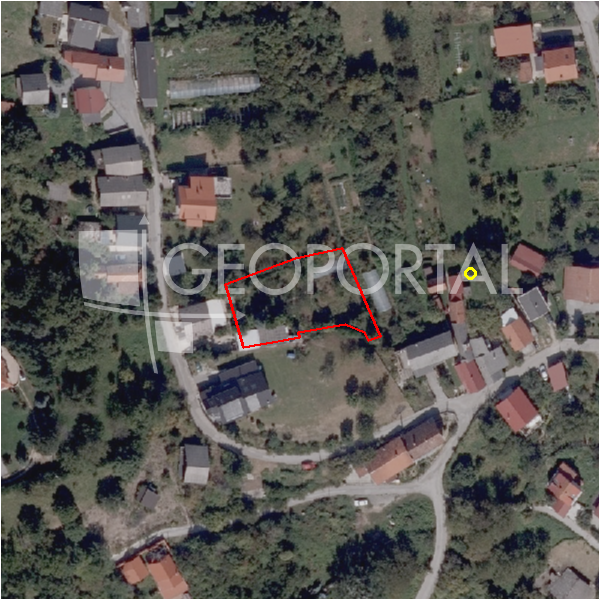

#36090 · Markuševec, građevinsko zemljište 1103m2 prodaja
Markuševec, Podsljeme, Grad Zagreb · zemljiste · njuskalo · status active · oglas ↗
Ocjena
- Score
- 55 rule 55 · LLM – · 12.09.2026.
- RLV
- 138.000 € (129 €/m²) · ratio 1,19
- Ukupna investicija
- 1,04 M€
- GBP
- 450 m²
- Feedback
- –
- CRM
- –
Oglas
- Cijena
- 115.815 € (105 €/m²)
- Površina
- 1.103 m² · DKP 1.071 m² (odstupanje -2,9 %)
- Prodavatelj
- agencija · PROSTOR & CO
- Prvi put
- 11.09.2026. · zadnje 11.09.2026. · 0 d na tržištu
Povijest cijene
| Datum | Cijena |
|---|---|
| 11.09.2026. | 115.815 € |
Flagovi
zone_uncertainty zona nije pregledana (reviewed: false) (−5)djelomicno_gradivo djelomicno_gradivo
gbp_ogranicen gbp_ogranicen
llm_pending LLM ekstrakcija/ocjena nedostupna
Komponente score-a
| rlv | {'gbp': 450.0, 'kis': 1.2, 'nkp': 369.0, 'noi': None, 'rlv': 137740.30434782617, 'ratio': 1.1893131662377598, 'value': None, 'phases': 1, 'profile': 'zagreb_visestambeno', 'gdv_neto': 1269360.0, 'cost_soft': 29700.0, 'gdv_bruto': 1586700.0, 'kis_known': True, 'total_inv': 1041213.9, 'cost_build': 742500.0, 'cost_other': 146250.0, 'cost_sales': 47601.0, 'demolition': False, 'gbp_source': 'cap:max_units=3', 'rlv_per_m2': 128.63308213282235, 'parcel_area': 1070.8, 'parcelation': False, 'roi_on_cost': 0.17339866477003427, 'profit_at_ask': 180545.09999999998, 'cost_demolition': 0.0, 'total_inv_phase': 1041213.9, 'parcel_area_effective': 894.1179999999999, 'sale_price_per_m2_nkp': 4300.0} |
| hard | [] |
| info | ['djelomicno_gradivo', 'gbp_ogranicen', 'llm_pending'] |
| rubric | {'permits': {'max': 10.0, 'detail': {'permit': 'none'}, 'points': 0.0}, 'physical': {'max': 10.0, 'detail': {'slope_pct': 19.16, 'slope_points': 2.168}, 'points': 2.17}, 'liquidity': {'max': 10.0, 'detail': {'n_cuts': 0, 'points_cut': 0.0, 'points_days': 0.03333333333333333, 'seller_type': 'agencija', 'points_fresh': 1.0, 'price_cut_pct': None, 'days_on_market': 1, 'points_private': 0}, 'points': 1.03}, 'rlv_ratio': {'max': 40.0, 'detail': {'rlv': 137740, 'ratio': 1.189, 'asking_price': 115815.0}, 'points': 30.68}, 'zone_quality': {'max': 15.0, 'detail': {'no_upu': True, 'source': 'gis', 'zone_class': 'stambeno', 'zone_ideal': True, 'gp_uredjeni': True}, 'points': 12.0}, 'price_vs_benchmark': {'max': 15.0, 'detail': {'source': 'auto:Podsljeme', 'deviation': 0.344, 'ask_eur_m2': 105, 'benchmark_eur_m2': 160.0}, 'points': 14.16}} |
| weights | {'llm': 0.4, 'rule': 0.6, 'model': 0.0} |
| penalties | {'zone_uncertainty': 5} |
| raw_score | 60,0 |
| rlv_notes | ['gradivo 84 % čestice (894 m²) — ostatak izvan gradive zone', 'GBP 1073 → 450 m² (ograničenje max_units=3)'] |
| flag_notes | {'max_gbp': 1285, 'total_inv': 1041214, 'zone_code': 'S', 'zone_class': 'stambeno', 'zone_source': 'gis', 'zone_reviewed': False, 'commercial_pct': 0.0, 'commercial_source': 'zone_rule'} |
| caps_applied | [] |
GIS
- Čestica
- k.o. 335347, k.č. 9262 (pin_buffer, 0,83); k.o. 335347, k.č. 9445 (pin_buffer, 0,83); k.o. 335347, k.č. 9259 (pin_buffer, 0,80)
- Zona
- S (stambeno) · NIJE pregledana
- kig / kis / katnost
- 0,30 / 1,20 / Po+P+2+Pk
- GP / UPU
- uredjeni · UPU ne
- Pristup / nagib
- unknown · 19,2 % (max 27,0 %)
- More
- –
- Zaštite
- Natura ne · zaštićeno ne · kulturno dobro ne
- Zgrade na čestici
- 0 %
- Match
- 0,83
Karta
Ortofoto (DOF)

RLV kalkulacija — pretpostavke
| gbp | {'value': 450.0, 'source': 'cap:max_units=3'} |
| kis | {'value': 1.2, 'source': 'gis'} |
| soft_pct | {'value': 0.04, 'source': 'profil'} |
| nkp_ratio | {'value': 0.82, 'source': 'profil'} |
| cost_other | {'value': 146250.0, 'source': 'profil: doprinosi+uređenje po m² GBP, financiranje+rezerva % gradnje'} |
| zone_share | {'value': 0.835, 'source': 'gis'} |
| parcel_area | {'value': 1070.8, 'source': 'dkp'} |
| asking_price | {'value': 115815.0, 'source': 'oglas'} |
| margin_on_cost | {'value': 0.15, 'source': 'profil'} |
| build_cost_per_m2_gbp | {'value': 1650.0, 'source': 'profil'} |
| sale_price_per_m2_nkp | {'value': 4300.0, 'source': 'benchmark:seed:Podsljeme'} |
| transfer_tax_and_acquisition | {'value': 0.06, 'source': 'profil'} |
Ekstrakcija iz oglasa
| zone_claim | S |
| building_on_parcel | usable |
Opis oglasa
Prodaje se građevno zemljište za stambenu izgradnju – Markuševec, Liješće ,Zagreb Na jedinstvenoj lokaciji u Markuševcu, nudimo građevno zemljište 1103 m² za izgradnju stambene kuće ili više stambenih jedinica. Zemljište je označeno kao stambena zona (S) u GUP-u Grada Zagreba. Prednosti lokacije i uvjeti gradnje: Mogućnost gradnje jedne kuće ili više stambenih jedinica za stanovanje u skladu s prostornim planom. Lokacijska informacija dostupna na uvid. Parcela se nalazi u mirnom i zelenom okruženju podsljemenske zone, idealnom za miran život u prirodnom ambijentu. Istovremeno je odlično prometno povezana s gradskim središtem, što omogućuje savršen balans privatnosti i dostupnosti sadržaja. Zašto ovo zemljište? Prilika za izgradnju vrhunske stambene nekretnine u podsljemenskoj zoni. Mogućnost kupnje susjednih parcela i gradnja više stambenih objekata. Visoka zakonska sigurnost – zemljište je građevno i urbanistički regulirano. Ulaganje u dugoročno održivu i atraktivnu lokaciju sa zelenim infrastrukturnim vizurama. Prostor and Co – Boutique agencija za nekretnine www.prostorco.hr marina@prostorco.hr +385 91 905 0185 ID KOD AGENCIJE: 24 Marina Jovišić Direktor/sales agent Mob: +385 91 905 0185 E-mail: marina@prostorco.hr www.prostorco.hr